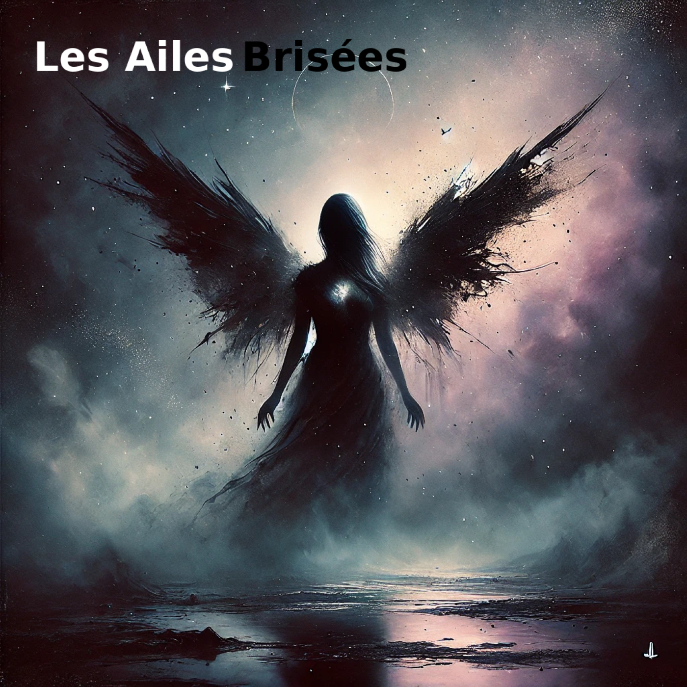

Biographie
Née dans les brumes de la Bretagne, Alys Noir a toujours été attirée par les arts sombres et la musique alternative...
Premier Album : Les Ailes Brisées

Sorti le 18 octobre 2024, "Les Ailes Brisées" est un voyage émotionnel à travers 10 titres qui explorent les thèmes de la renaissance, de la transformation et de la résilience.
Liste des titres
- 1. Entre les Ombres (3:38)
- 2. La dernière danse (2:59)
- 3. L’enfant du vide (3:03)